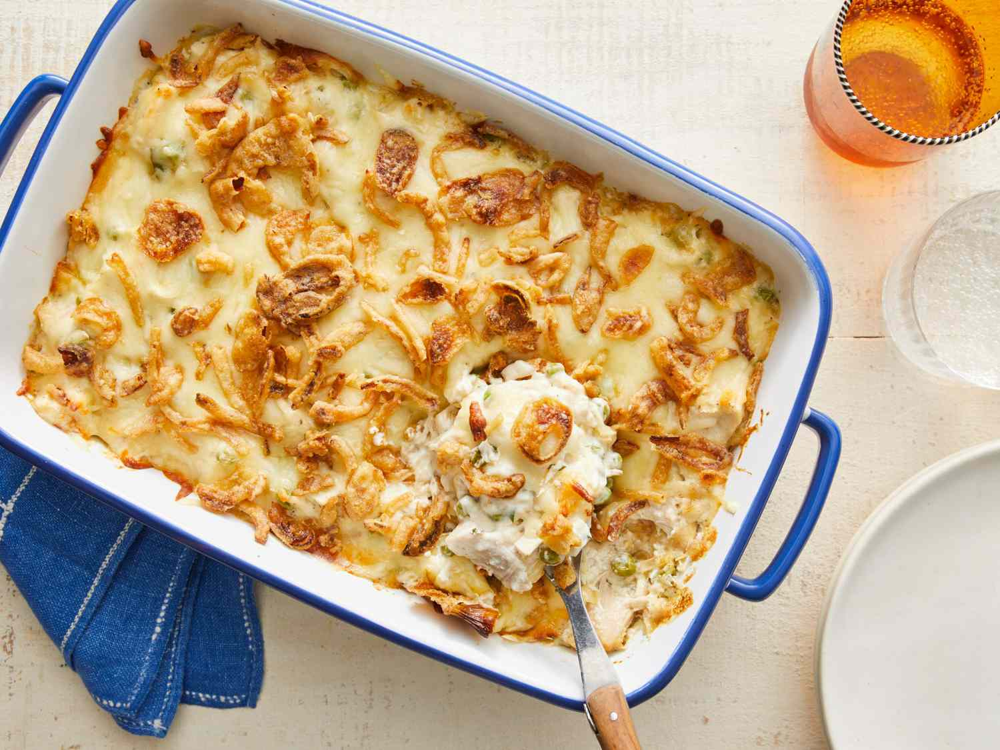

Cheesy Ham and Hash Brown Casserole
Home

Recipe for Cheesy Ham and Hash Brown Casserole
This ham and hash brown casserole is quick and easy to make, not to mention delicious! I mostly serve this as a breakfast casserole, but it's great anytime. It may be served with or without diced ham.
Ingredients
- cooking spray
- 1 (32 ounce) package frozen hash brown potatoes
- 2 (10.5 ounce) cans condensed cream of potato soup
- 1 (16 ounce) container sour cream
- 2 cups shredded sharp Cheddar cheese
- 8 ounces cooked, diced ham
- 1 ½ cups grated Parmesan cheese
Steps
- Preheat the oven to 375 degrees F (190 degrees C). Lightly grease a 9x13-inch baking dish with cooking spray.
- Mix together hash browns, condensed soup, sour cream, Cheddar cheese, and ham in a bowl until well combined. Spread evenly into the prepared dish. Sprinkle with Parmesan cheese.
- Bake in the preheated oven until bubbly and lightly brown, about 1 hour.